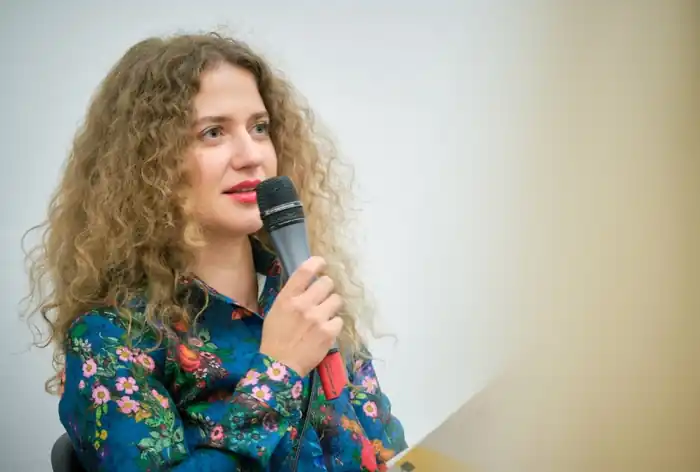

Галина Шиян — українська перекладачка, письменниця, підприємець. Народилася 23 липня 1980 року у Львові.
За освітою класичний філолог.
1999 року спільно з сестрою Анастасією Шиян заснувала книгарню іноземної літератури "ГалІнБоок". Дописувала для часопису "Просто Неба", збірки "Волонтери", проекту "Їздець". 2001 року закінчила Львівський національний університет імені Івана Франка за спеціальністю "класична філологія". 2012 року у видавництві "Ліга Прес" видала переклад роману букерівського лауреата Ді-Бі-Сі П'єра "Світло згасло в Країні Див" (за редакції Юрія Андруховича). На основі твору створено проєкт "Декаданс Бере Своє" під творчою маркою "Батрахоміомахія". 2014 року у "Видавництві Старого Лева" вийшов друком дебютний роман Галини Шиян "Hunt, doctor, Hunt!", проілюстрований подругою авторки Маріанною Винар. 2014 року долучилася до збірки оповідань "Волонтери" оповіданням "Гусінь" (КСД, 2014) 2014 року, як співвласниця книгарні, почала активну діяльність спрямовану на знищення практики непрозорих та корупційних схем у закупівлі підручників. 2015 року Створила авторський курс "Creative writing з Тіло Шульцом. Оповідання за вікенд" (Їздець, 2015).